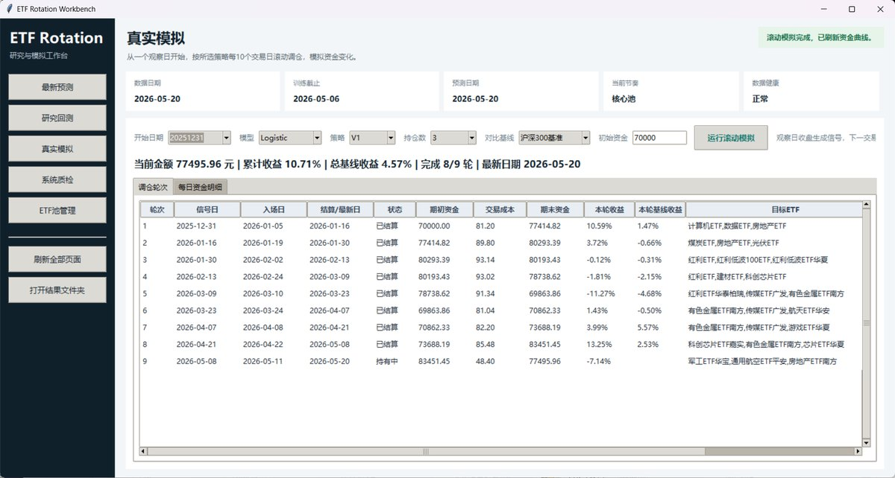
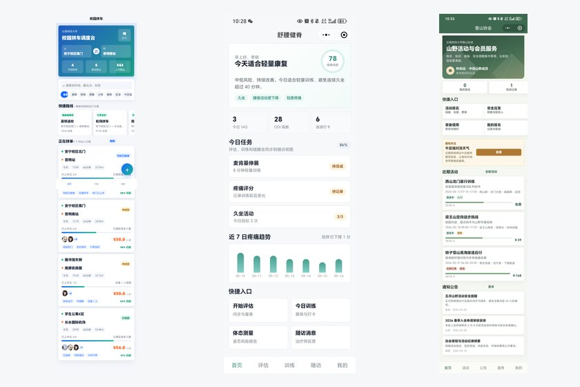
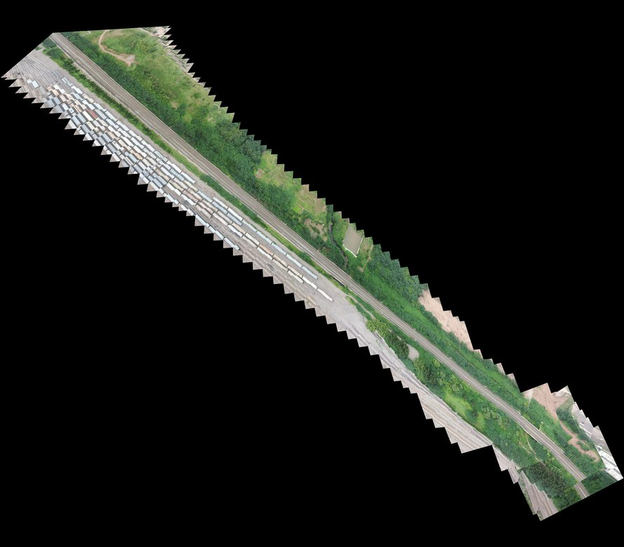
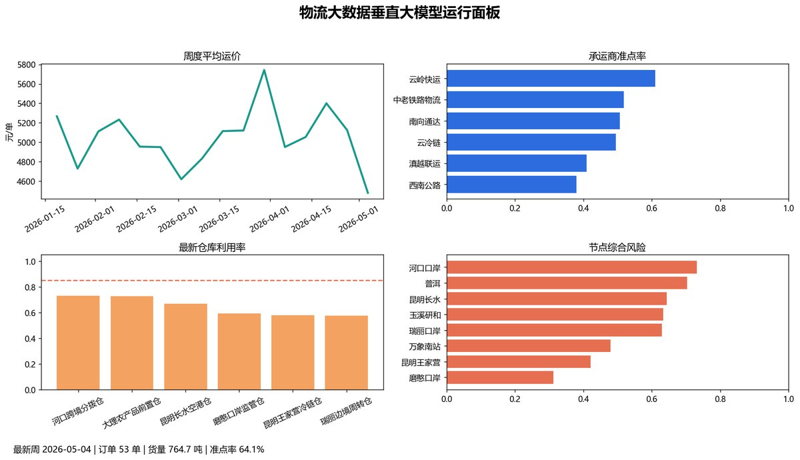

Portfolio Overview
王俊松项目作品集
这里汇总我在计算机视觉、计算成像、金融智能、RAG 应用和微信小程序方向的代表项目。每个项目都保留关键截图、结果图和数据事实，便于快速了解项目目标、核心做法与可展示成果。
Computer VisionFinancial AIRAG / AgentMini ProgramPython / OpenCV / PyTorch



项目总览
360车载全景影像拼接
工程车辆四路鱼眼相机 BEV 拼接，上机演示与多尺度环视输出。

ACAF2025金融智能创新大赛
基金申赎 7 日预测，三等奖，覆盖数据工程、特征融合和 LSTM-Attention。

AI健身动作识别与评分
基于摄像头姿态估计、关键点规则、自动计数与运动反馈的视觉原型。
事件与情绪分析 / ETF量化辅助
多因子 ETF 轮动模拟盘，叠加新闻、公告和社区情绪的信息增强层。

铁路无人机全景拼接
从铁路巡检视频抽帧、配准到全景底图生成，服务工业视觉预处理。

物流大数据垂直大模型
RAG + 工具调用 + 数据分析 Skills，覆盖运价、路径、风险和自动周报。
微信小程序展示合集
校园网约车、舒腰健脊、登山协会三个小程序的产品与工程展示。